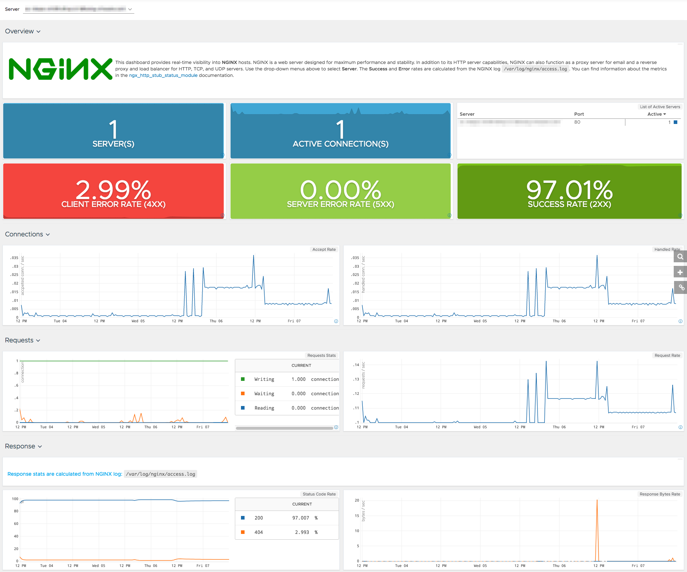

- 00 开篇词 你为什么应该学好软件工程？.md.html
- 01 到底应该怎样理解软件工程？.md.html
- 02 工程思维：把每件事都当作一个项目来推进.md.html
- 03 瀑布模型：像工厂流水线一样把软件开发分层化.md.html
- 04 瀑布模型之外，还有哪些开发模型？.md.html
- 05 敏捷开发到底是想解决什么问题？.md.html
- 06 大厂都在用哪些敏捷方法？（上）.md.html
- 07 大厂都在用哪些敏捷方法？（下）.md.html
- 08 怎样平衡软件质量与时间成本范围的关系？.md.html
- 09 为什么软件工程项目普遍不重视可行性分析？.md.html
- 10 如果你想技术转管理，先来试试管好一个项目.md.html
- 11 项目计划：代码未动，计划先行.md.html
- 12 流程和规范：红绿灯不是约束，而是用来提高效率.md.html
- 13 白天开会，加班写代码的节奏怎么破？.md.html
- 14 项目管理工具：一切管理问题，都应思考能否通过工具解决.md.html
- 15 风险管理：不能盲目乐观，凡事都应该有B计划.md.html
- 16 怎样才能写好项目文档？.md.html
- 17 需求分析到底要分析什么？怎么分析？.md.html
- 18 原型设计：如何用最小的代价完成产品特性？.md.html
- 19 作为程序员，你应该有产品意识.md.html
- 20 如何应对让人头疼的需求变更问题？.md.html
- 21 架构设计：普通程序员也能实现复杂系统？.md.html
- 22 如何为项目做好技术选型？.md.html
- 23 架构师：不想当架构师的程序员不是好程序员.md.html
- 24 技术债务：是继续修修补补凑合着用，还是推翻重来？.md.html
- 25 有哪些方法可以提高开发效率？.md.html
- 26 持续交付：如何做到随时发布新版本到生产环境？.md.html
- 27 软件工程师的核心竞争力是什么？（上）.md.html
- 28 软件工程师的核心竞争力是什么？（下）.md.html
- 29 自动化测试：如何把Bug杀死在摇篮里？.md.html
- 30 用好源代码管理工具，让你的协作更高效.md.html
- 31 软件测试要为产品质量负责吗？.md.html
- 32 软件测试：什么样的公司需要专职测试？.md.html
- 33 测试工具：为什么不应该通过QQ微信邮件报Bug？.md.html
- 34 账号密码泄露成灾，应该怎样预防？.md.html
- 35 版本发布：软件上线只是新的开始.md.html
- 36 DevOps工程师到底要做什么事情？.md.html
- 37 遇到线上故障，你和高手的差距在哪里？.md.html
- 38 日志管理：如何借助工具快速发现和定位产品问题 ？.md.html
- 39 项目总结：做好项目复盘，把经验变成能力.md.html
- 40 最佳实践：小团队如何应用软件工程？.md.html
- 41 为什么程序员的业余项目大多都死了？.md.html
- 42 反面案例：盘点那些失败的软件项目.md.html
- 43 以VS Code为例，看大型开源项目是如何应用软件工程的？.md.html
- 44 微软、谷歌、阿里巴巴等大厂是怎样应用软件工程的？.md.html
- 45 从软件工程的角度看微服务、云计算、人工智能这些新技术.md.html
- 一问一答第1期 30个软件开发常见问题解决策略.md.html
- 一问一答第2期 30个软件开发常见问题解决策略.md.html
- 一问一答第3期 18个软件开发常见问题解决策略.md.html
- 一问一答第4期 14个软件开发常见问题解决策略.md.html
- 一问一答第5期 22个软件开发常见问题解决策略.md.html
- 学习攻略 怎样学好软件工程？.md.html
- 特别放送 从软件工程的角度解读任正非的新年公开信.md.html
- 结束语 万事皆项目，软件工程无处不在.md.html
- 捐赠
38 日志管理：如何借助工具快速发现和定位产品问题 ？
你好，我是宝玉。在开始学习之前我想先问你几个问题：
如果你的网站或者服务出现故障，是谁第一时间发现问题的？用户还是运维人员？
假设你的服务架构是由若干微服务组成的，其中一个微服务的异常导致了你的某个 API 请求异常，你是否能快速定位到是哪个微服务出了问题？
在部署系统后，你是否能观察出来系统的性能是上升了还是下降了？
如果你自己对这些问题的答案不是很满意，那么就可以来看看，如何借助监控和日志分析工具，或者说日志管理工具，第一时间发现线上问题，以及快速定位产品问题。
什么是日志管理？
要理解上面提到的这些问题，首先你要清楚，什么是日志管理。
日志就是操作系统和应用软件自动生成的事件说明或者消息记录，包含了时间、日志信息。举例来说，下面就是一个典型的 Web 请求日志：
10.0.1.22 – – [15/Oct/2018:13:46:46 -0700] “GET /favicon.ico HTTP/1.1” 404
10.0.1.22 – – [15/Oct/2018:13:46:58 -0700] “GET / HTTP/1.1” 200
从上面的日志中，可以看出来，日志包含两次 http 请求，它们发生的时间、请求的 URL、请求的 IP 地址、最后返回的状态码等信息。
在日志数量不多的时候，凭借肉眼或者借助文本编辑器，还能大概看出日志的内容，但是当日志数量一多，从日志里面查找需要的信息就变得很困难了。
现在的应用程序越来越复杂了，尤其是像微服务这样的架构，一个系统需要由若干微服务组成，每个微服务可能还会部署在若干容器上，那么意味着如果你要根据日志去排查故障的话，需要从几十、上百个地方去收集日志，再逐个去分析。
要解决这样的问题，就需要对日志进行统一管理。日志管理就是指对系统和应用程序产生的日志进行处理的方法，包括对日志进行统一收集，对日志数据进行筛选和解析，统一存储，还要让它们可以方便被检索。
当然你不需要自己去从头实现这样的日志管理系统，现在已经有很多成熟的日志管理工具可以帮助你对日志进行管理，你只要去了解这些工具可以帮助你做什么，以及如何基于它们来搭建适合你项目的日志管理系统即可。
如何快速发现和定位问题？
也许你会问，为什么说搭建了日志管理系统，就可以帮助快速发现和定位问题呢？
首先，日志集中式管理后，就可以方便地对所有日志进行统一的检索。当所有日志都可以放在一起检索了，自然就能高效地定位到问题，而不再需要到各个应用程序的日志里面去分别检索。
同时在检索的方式上，可以用类似于 SQL 语句的方式来检索，高效地对结果进行查询和归类。

图片来源：Splunk
然后，对日志进行集中式管理后，可以通过图表直观的看到应用运行情况。当所有的应用实时将日志传输到一起，日志管理系统就可以根据应用日志中记录的信息，动态地生成图表，实时看到应用运行的情况。
举例来说，某一个 API 服务，日志信息记录了每一次 Http 请求的状态、耗费时间等信息。
127.0.0.1 [10/Oct/2018:13:55:36 -0700] “GET /api HTTP/1.1” 200 2326 0.038
那么把这些信息统一收集、实时统计的话，就可以随时看到单位时间内，这个 API 错误率有多少，平均耗时多久，从而可以根据这样的信息生成实时的图表，方便查看当前 API 服务的运行情况。

图片来源：WaveFront
最后，可以根据日志的数值设置规则自动报警。对于这些从日志中实时分析出来的数据结果，如果设置好相应的阈值，在超过阈值后，比如说 API 错误率超过 10%，或者 90% 的 API 请求时间超过 1 秒，就会自动触发报警，通知相关的开发人员进行维护。
所以你看，当你搭建好一整套日志管理系统后，不仅可以帮助你快速地对日志进行检索，你也可以根据图表看数据走势，还可以通过对日志分析结果的监控，设置自动报警的规则，第一时间了解系统故障。
大厂的日志管理系统的架构是什么样子？
现在对于像阿里、新浪这样的大厂来说，对日志管理系统的应用已经是标配了，比如说阿里云：《基于 ELK 实时日志分析的最佳实践》、新浪：《ELK Stack 在新浪微博的最佳实践》、《新浪是如何分析处理 32 亿条实时日志的？》，七牛：《如何快速搭建智能化的统一日志管理系统》。
可以看得出，很多大厂是基于 ELK 搭建的自己的日志管理系统，而 ELK 的架构也是一套经典的日志管理的架构，所以这里我就以 ELK 为例来说明日志管理系统的基本架构。
先解释一下 ELK：
ELK 是 Elasticsearch+Logstash+Kibana 的缩写。
ElasticSearch 是一套搜索框架，提供了方便的接口，可以方便地做全文检索，可以用来对日志进行检索。
Logstash 是一个数据收集工具，可以用来收集日志数据。
Kibana 是一套可以和 ElasticSearch 交互的界面，通过 Kibana 可以方便的检索 ElasticSearch 内的所有数据，还可以用图形化的方式展示数据结果。
基于 ELK 搭建的日志管理系统基本架构是这样的：

这套架构有几个重要的模块：日志采集和解析、存储和搜索、结果可视化、监控和报警。
- 日志采集和解析
要想对日志进行统一管理，就必须要从各个应用系统收集日志。Logstash 就可以帮助实现对日志的采集。
如果日志文件只是一行行带时间戳的文本，那其实是无法有效检索的，必须将其解析成结构化的数据，才能方便地检索。
另外，一套系统可能由不同的应用类型组成，有的是 Java 写的，有的是 Go 写的，日志格式可能完全是不一样的，所以还有必要在对日志解析后，提取公共元素，比如时间、IP 地址、主机名、应用名称等。
Logstash 不仅可以对日志数据进行收集，还能对日志数据进行过滤和解析，解析完成后再将解析好的数据发送给 ElasticSearch。
- 存储和搜索
当所有的日志数据都被集中存储后，可以想象这个日志数据库是相当庞大的，直接查询效率是比较低下的，这就意味着还需要对日志数据进行索引和分析，从而让你可以快速地检索出来结果。
ElasticSearch 就是一套专业的全文检索和数据存储系统，同时还有一套类似于 SQL 的查询语句，这样你就可以基于它，方便对收集好的日志数据进行检索了。
但 ElasticSearch 本身类似于数据库，没有图形化界面。
- 结果可视化
可视化是日志管理的另一项重要功能。通过可视化的图表，可以直观地看到数据的走势，以及方便地和历史数据进行对比。
比如说通过观察交易数据的走势曲线，就能看出来这周的交易数据比上周是增长还是下降；根据 API 响应速度的走势，可以看得出新版本部署后，性能是提升了还是下降了。
像 Kibana 就是一套专门针对 ElasticSearch 的图形化操作工具，可以方便对 ElasticSearch 数据进行检索，也可以对结果用图表的方式展现。
- 监控和报警
ELK 本身只是提供了一套基础的日志管理框架，但是基于它之上还可以有很多扩展，比如说自动报警就是一个非常典型的场景，可以基于已经存储和索引好的日志数据，制定相应的自动报警规则，当线上服务发生异常时，可以自动地触发报警，通知相关值班人员及时处理。
ELK 可以通过插件的方式，安装像 ElastAlert 或Watcher这样的自动报警插件，实现自动报警功能。

图片来源：Build your own error monitoring tool
怎样搭建一套日志管理系统？
在了解了整个日志管理系统的基础架构后，再要去搭建这样一套日志管理系统，就可以做到心中有数了。你可以基于这套架构去寻找合适的工具，或者直接基于 ELK 去搭建一套日志管理系统。
关于 ELK 网上已经有很多安装使用教程，比如这一本电子教程《ELK 教程》就写的很详细。
ELK 本身是一套开源免费的工具，除了 ELK，还有一些类似的工具可以选择，可以和 ELK 配合使用。
- Splunk
Splunk 是一套商业的日志管理系统，搜索功能非常强大，操作方便，就目前来说，要比 ELK 好用，但价钱很高。
- Grafana
Grafana 是一套开源的数据监测和可视化工具，可以和 ELK 或 Splunk 配合使用，展示效果比 Kibana 要更好。同时可以支持自动报警功能。
- Wavefront
Wavefront 是 VMware 旗下的一款商业的图形化监控和分析工具，可以从 ELK 或 Splunk 等数据源收集数据，在此基础上分析应用的性能瓶颈所在，排除故障。也支持自动报警。
- PagerDuty
PagerDuty 是一套报警服务，不仅可以和手机、邮件、Slack 等方便地集成，还可以和企业的轮值安排结合，按照排班顺序呼叫当值人员。
以上就是一些常用日志管理系统以及配套系统工具，基本上可以很好地满足你对日志管理的需求，通过搜索引擎你也可以找到更多类似的服务。
总结
今天我带你一起学习了日志管理工具相关的内容。通过日志管理工具，可以集中的管理所有系统的日志，方便对日志进行检索，图形化的展示结果，还可以做到根据设置的规则进行自动报警。
如果你想搭建属于自己的日志管理系统，可以基于 ELK 或者 Splunk 这样的日志管理工具，配合一些插件，实现你自己的日志监控和分析工具。
在搭建好日志管理系统后，如果我们再回头看文章开头那几个问题，你会发现：
如果你的网站或者服务出现故障，可以通过你设置好的自动报警规则第一时间通知值班人员，及时解决；
假如你的某一个微服务出现异常，你可以从你的日志管理系统中直接对所有微服务的日志进行查询，快速定位到问题所在；
在部署系统后，通过对 API 响应时间等数据指标的图形化显示，你可以直观的看到性能是上升了还是下降了。
总的来说，借助日志管理工具，可以帮助你快速发现和定位产品问题。
© 2019 - 2023 Liangliang Lee. Powered by gin and hexo-theme-book.